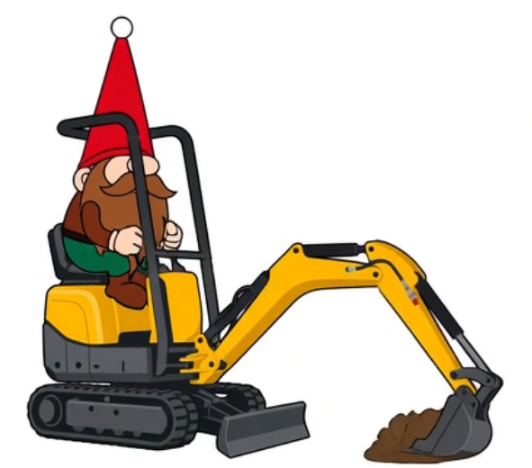

Der kleinste Profi
Der Wacker Neuson 803 Dual Power ist einer der kompaktesten Mini-Bagger auf dem Markt. Mit nur 700 mm Breite passt er durch Türen und in engste Bereiche. Dank Dual-Power-Option kann er wahlweise mit Diesel oder emissionsfrei elektrisch betrieben werden.
Ideal für Gartenbau, Sanierungen, Innenarbeiten und alle Stellen, wo Platz und Emissionen eine Rolle spielen.
Technische Daten
- ModellWacker Neuson 803 Dual Power
- Betriebsgewichtca. 1.050 – 1.110 kg
- MotorYanmar 3-Zylinder Diesel, ca. 9,6 kW
- Grabtiefe max.1.763 mm
- Grabradius max.3.090 mm
- Ausschütthöheca. 2.012 mm
- Breite (eingefahren)700 mm
- Breite (ausgefahren)860 mm
- Transportmaße (L×B×H)ca. 2,83 × 0,70 × 2,26 m
- BesonderheitenDual Power (Diesel + Elektro), Planierschild, Gummiketten
Mietpreise
- Tagesmiete75 € inkl. MwSt.
- Ab 5 Tagen65 € pro Tag inkl. MwSt.
- Kaution500 €
- Abholung / Lieferungauf Anfrage
- Einweisunginklusive
Verfügbarkeit & Reservierung
Wähle freie Tage im Kalender aus. Belegte Tage sind markiert. Die Auswahl wird in die Anfrage übernommen.